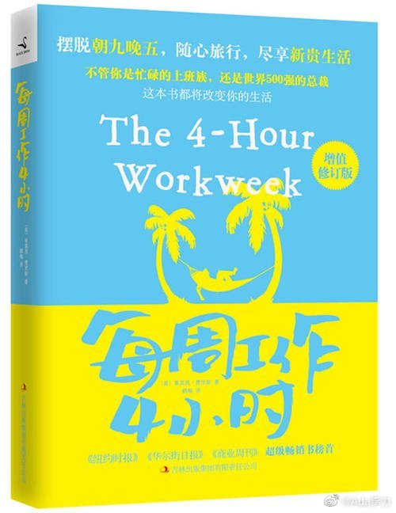

#一个人的企业#
去年我读了《每周工作4小时》，一直想着要给大家分享下这本书。
目前作者随心旅行，每周工作四小时，还能管好自己名下的企业。
2001年，他是在当一家It公司的销售时，工作期间摸鱼开始应研究开设一家运动营养品公司的可行性，发现从产品生产的广告设计一切都可以外包出去，于是他用了两周时间拿着从信用卡里透支来的5000美元，办了一个网站，而且采购了第1批商品。到了2003年，他已经可以每个月赚4万美元，差不多是他以前的年薪。
如果能从这本书受益，首先就是要有销售的意识和给自己设置销售挑战。
作者在普林斯顿大学的一个课程上给学生提出过作业要求让他们去联系It行业最知名的那些人。实际上，课堂上很多的学生都做到了，需要使用一些技巧，但比技巧更重要的是你首先要认为这个任务不难，如果你认为这是一个非常难的任务，你连开始行动的勇气都没有。
去年我读了《每周工作4小时》，一直想着要给大家分享下这本书。
目前作者随心旅行，每周工作四小时，还能管好自己名下的企业。
2001年，他是在当一家It公司的销售时，工作期间摸鱼开始应研究开设一家运动营养品公司的可行性，发现从产品生产的广告设计一切都可以外包出去，于是他用了两周时间拿着从信用卡里透支来的5000美元，办了一个网站，而且采购了第1批商品。到了2003年，他已经可以每个月赚4万美元，差不多是他以前的年薪。
如果能从这本书受益，首先就是要有销售的意识和给自己设置销售挑战。
作者在普林斯顿大学的一个课程上给学生提出过作业要求让他们去联系It行业最知名的那些人。实际上，课堂上很多的学生都做到了，需要使用一些技巧，但比技巧更重要的是你首先要认为这个任务不难，如果你认为这是一个非常难的任务，你连开始行动的勇气都没有。
- 